first concept
The initial sketching phase
Here are the terrible first sketches I went through to get to the first tada moment. The following three are part of the first organization. Its the first full list, the hover statem and then full character profile.
This is also when I first attempted the colour pallet for franchises. I was definitely feeling that.

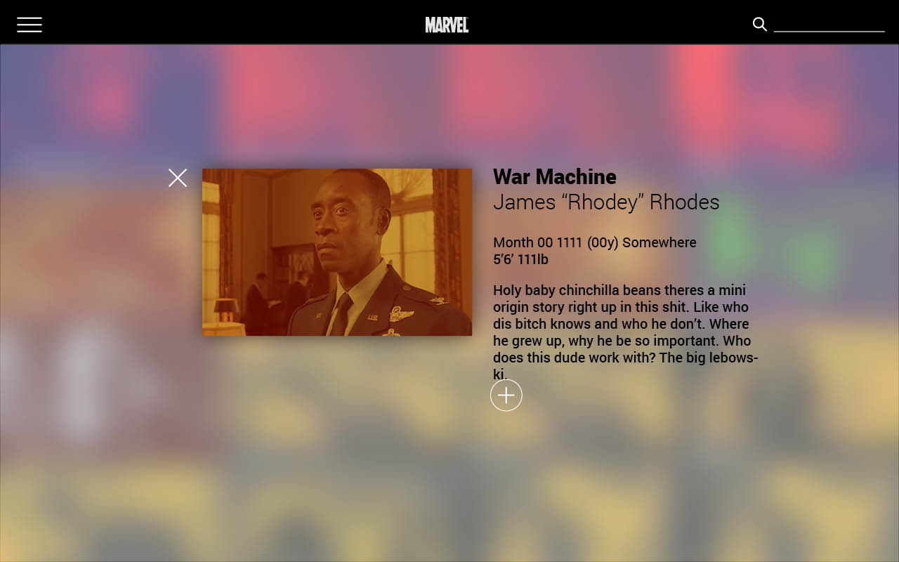

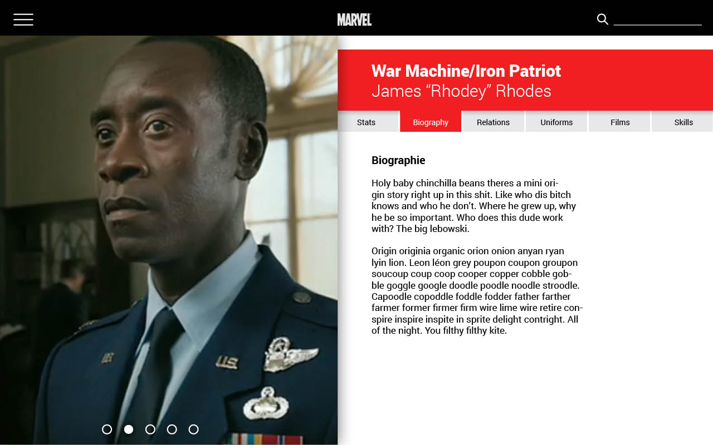
The following was the introduction of tabs. This was one of the original intents on tabed character profiles. I sort of liked it but not fully.

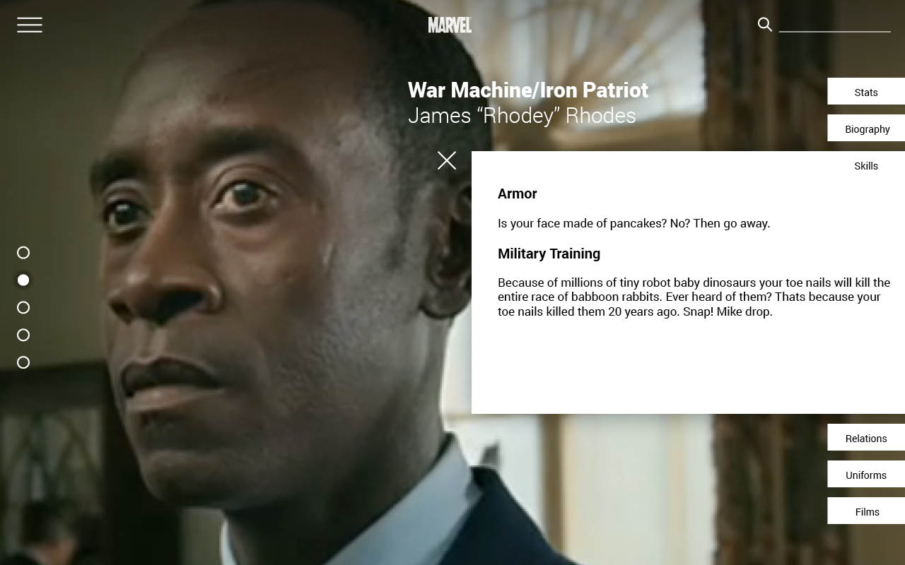

Ideas for the character list choises changed. I tested the idea of duotones again here. but also tried to see how it worked without it. The Gif part was that once you select a person from the list, it opens up and plays a gif.

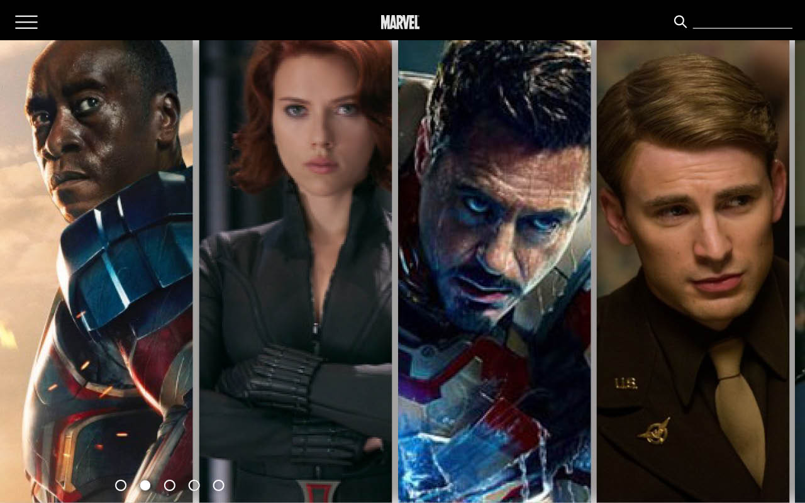

The First aha moment
Toying with tabs I finally arrived at this final design. The background was designed to subtly move while the png of the character and the text stayed the same.
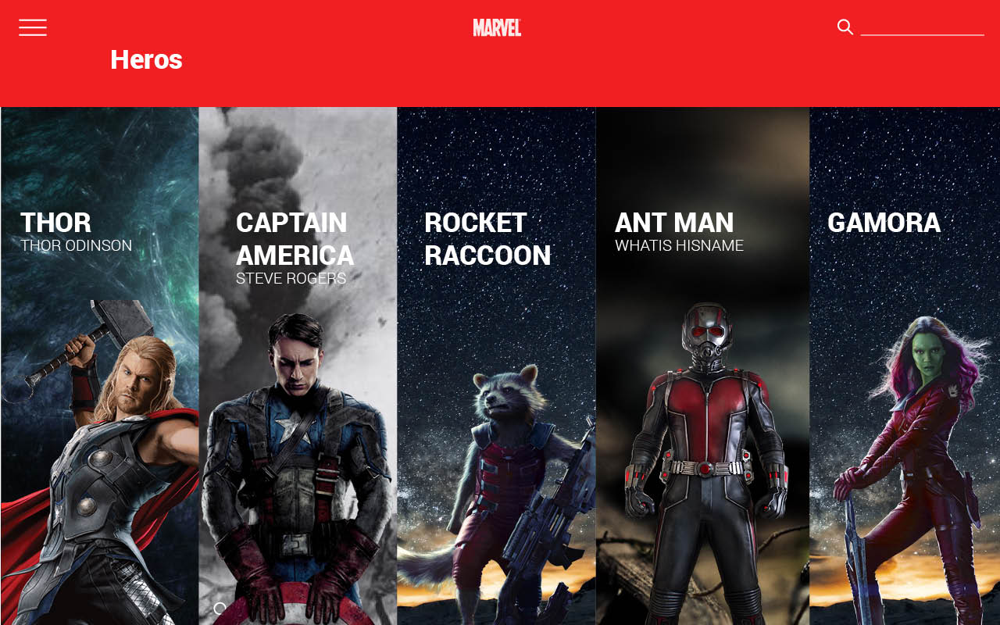


Meanwhile... the timeline
The timeline sort of happened separately and much more quickly than the character profile. The first sketch I came up with I hated. The second was basically a winner for me. And that became the final state for the Time line the first design round.
The First aha:Timeline
Phase 2
Feedback
I was reminded that this is a maginificent film franchise, it should feel more spectacular than just some wiki page. These are some of the initial sketches I came up with. I tried making the motion and visual organization more interesting. I wasn't fully sold on these ideas though.
Ideas
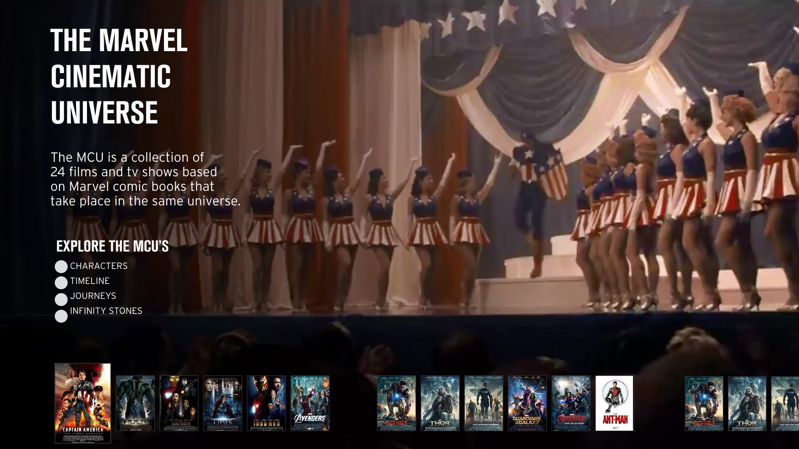

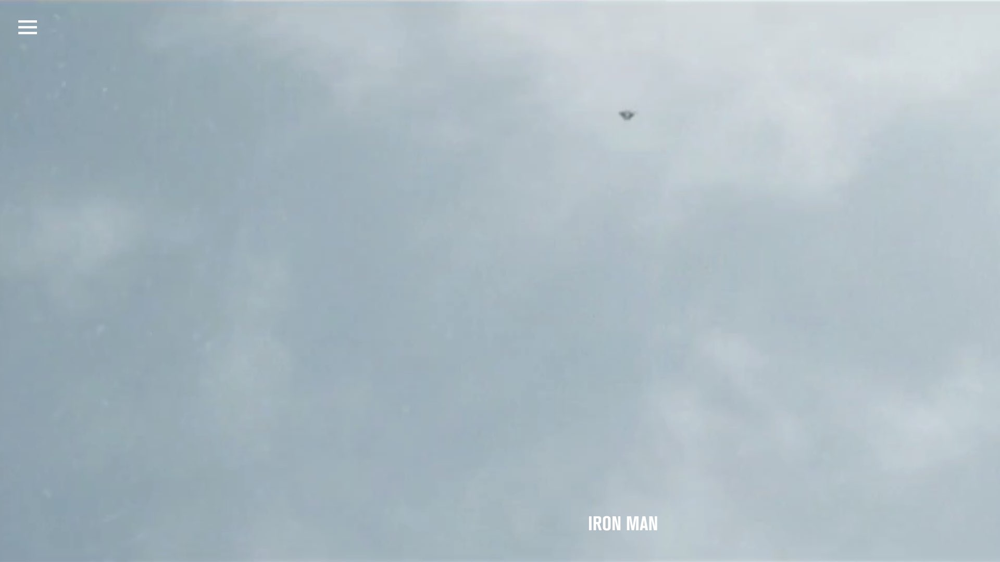

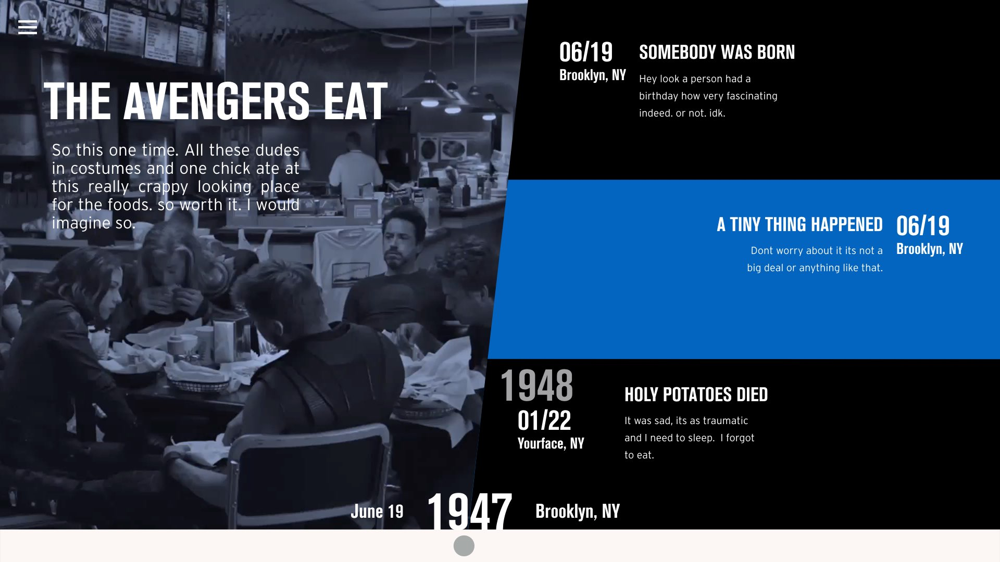
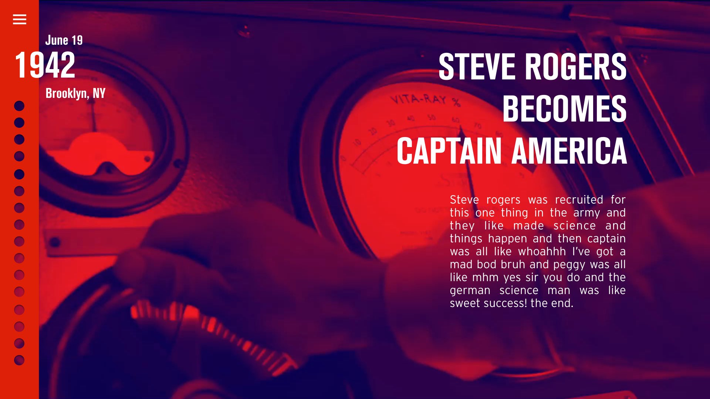
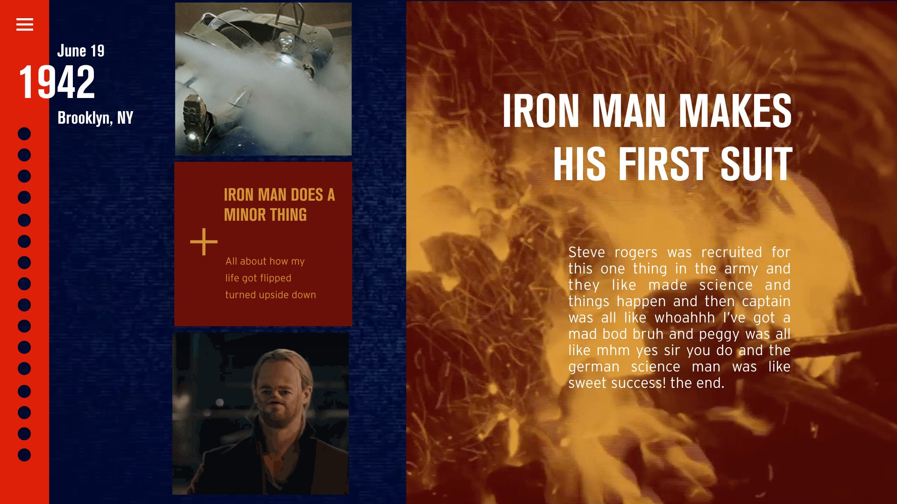
Feedback
I was told it needed more connectivity that everything felt very separate. Lightbulbs went off in my head and and I got to designing.
Full Page
The idea of letting the user see the full website upon landing hit me. It gave the idea of depth and multitude of information. I thought it would zoom in when you land, into the film profile page and that from there you could navigate through the drop down menu. I also was inspired by a website I found that used hovering on edges to pull in the next page. So I thought what if the edges were the differnt pages of the website. and hovering on the edges pulled in the different pages.
Site Map


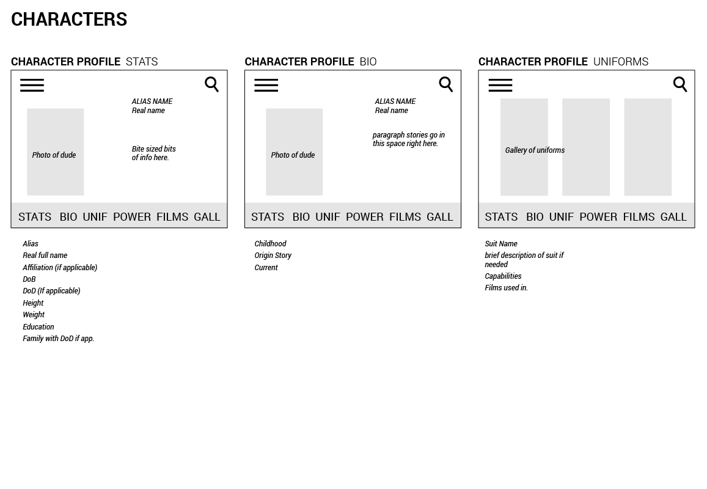
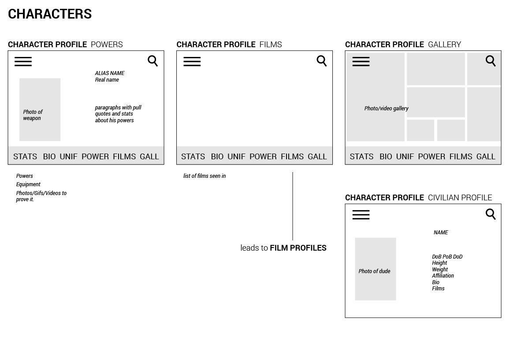
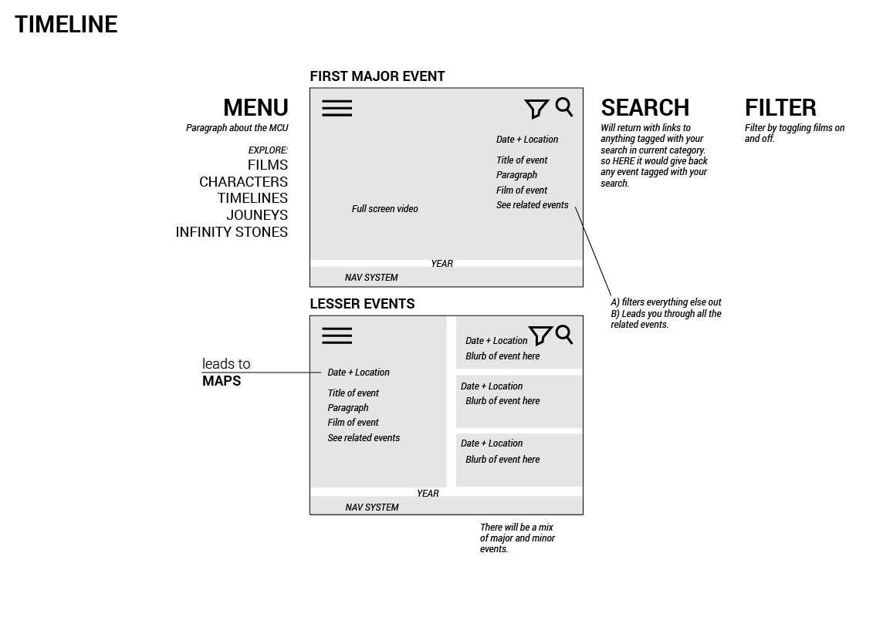
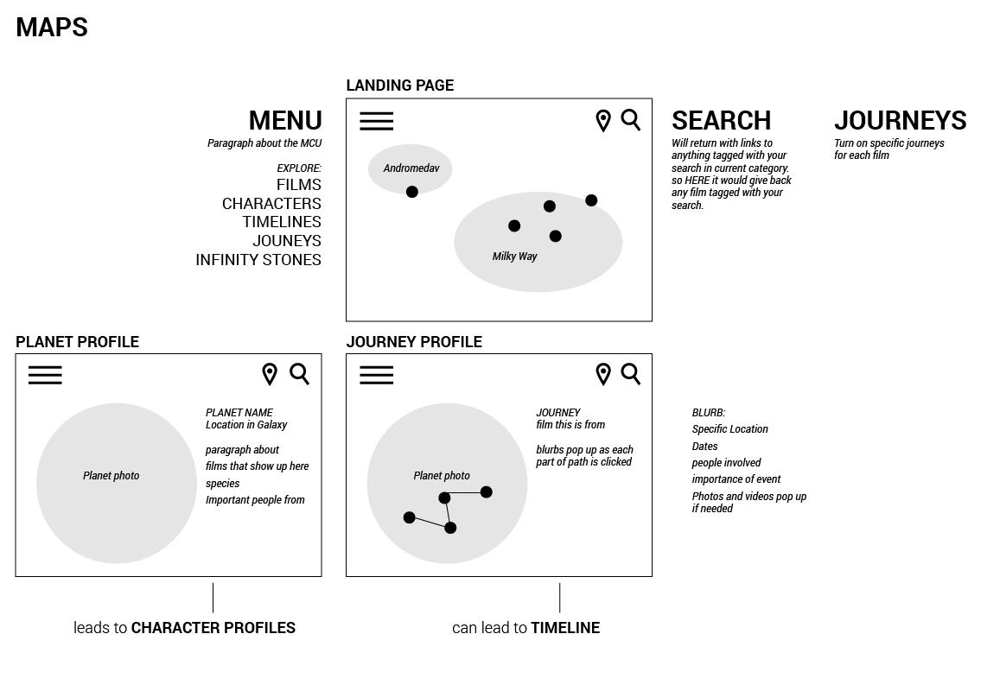
Feedback
A friend of mine asked me to think for a moment what the lay out of using the edge navication would look like in real life as a 3 dimensional object. How would it function. If I went from page A>B what would replace A on the edges? So we thought long and hard about how this organization worked in 3 dimensions. The Cube was the answer.


{kind=link}
{kind=link}